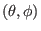
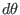
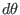

Local safety factor
Local safety factor is defined by
which characterizes the local pitch angle of a magnetic field line on a
magnetic surface (i.e. on
 plane). Substituting the
contravariant representation of the magnetic field, Eq. (176), into
the above equation, the local safety factor is written
Note the expression in Eq. (179) depends on the Jacobian
 . This is because the definition of depends on the
definition of
. This is because the definition of depends on the
definition of  , which in turn depends on the the Jacobian
. [In passing, note that in terms of , the contravariant
form of the magnetic field, Eq. (176), is written
, which in turn depends on the the Jacobian
. [In passing, note that in terms of , the contravariant
form of the magnetic field, Eq. (176), is written
 |
(180) |
] The global safety factor is defined as the poloidal average of the local
safety factor,
 |
|
|
(181) |
| |
 |
|
(182) |
The physical meaning of is obvious: it represents the number of
toroidal circles a magnetic field line travels when the line travels a
complete poloidal circle. Note that and defined this way
can be negative, which depends on the choice of the positive direction of
 and coordinates (note that the safety factor given in G-eqdsk
file is always positive, i.e. it is the absolute value of the safety factor
defined here).
and coordinates (note that the safety factor given in G-eqdsk
file is always positive, i.e. it is the absolute value of the safety factor
defined here).
(In passing, let us consider the numerical calculation of  . Using the
relation
. Using the
relation  and  [Eq. (188)], equation
(182) is further written
and  [Eq. (188)], equation
(182) is further written
Equation (183) is used in the GTAW code to numerically calculate the
value of on magnetic surfaces, which agrees with the value specified in
the G-eqdsk file. Using
 and
and
 , the absolute value of is written
, the absolute value of is written
which is the familiar formula we see in textbooks.)
yj
2018-03-09